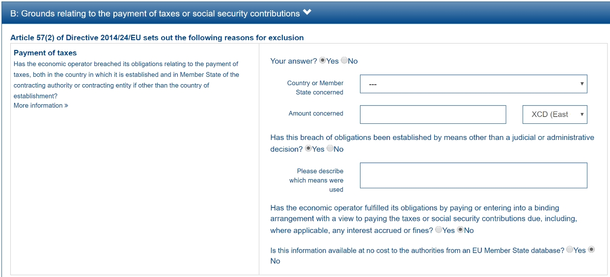
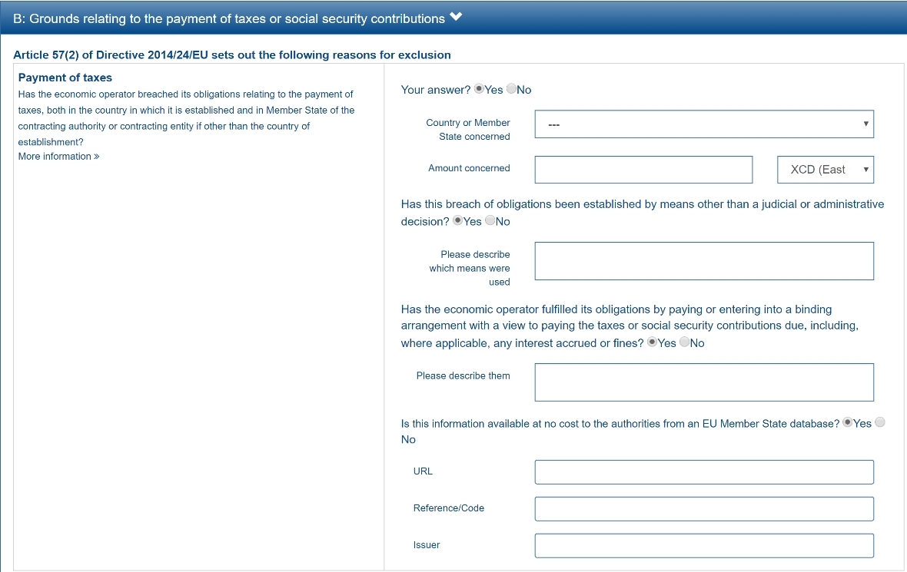

GUI control elements
The ESPD-EDM specification includes two sets of data elements (codes) that help software applications control how to show the Graphic User Interfaces (GUI) dealing with ESPD Documents. These elements can be seen as ''processing instructions''.
ONTRUE/ONFALSE codes for GROUP and SUBGROUP control
Three codes concerning the GROUPS or SUBGROUPS of REQUIREMENT(s) and QUESTION(s) are defined in the code list PropertyGroupType:
-
ON*, meaning that the GROUP or SUBGROUP has to be processed always;
-
ONTRUE, meaning that the GROUP or SUBGROUP has to be processed, and announcing that a GROUP or SUBGROUP is coming next which must not be processed if the value of the closer QUESTION of type INDICATOR is true;
-
ONFALSE, meaning that the GROUP or SUBGROUP must be processed if the value of the closer QUESTION of type INDICATOR is false;
These codes are used for a software application modules to know whether it has to process a concrete GROUP or SUBGROUP. If the objective of the module is, for example, to build dynamically the Graphic User Interface (GUI) - based on the ESPD-Request or an ESPD-Response XML instance-, then a GROUP or SUBGROUP marked as ONTRUE implies that the GROUP or SUBGROUP content is to be shown, whilst the one marked as ONFALSE needs to be hidden. GROUPS and SUBGROUPS marked as ON* imply that has to be always shown. You can see this mechanism as a way of implementing ''choices'' or ''switch/cases'' inside a Criterion Data Structure.
The figure below illustrates how the ONTRUE and ONFALSE SUBGROUPS of a Criterion of type "Contributions (exclusion grounds)" relate to each of its ''closer QUESTION'' of type INDICATOR (see boxes and lines coloured in blue):

Figure 42. GROUP and SUBGROUP control via the ONTRUE/ONFALSE codes
The screen-captures below illustrate how the European Commission’s ESPD Service processed the GUI for the Exclusion Criterion ''Contributions'' based on this mechanism. Note that these are examples on how the GUI is processed and its behaviour taking into account the PropertyGroupType, the actual content can be outdated:

Figure 43. Case 1: When the first QUESTION ''Your Answer?'' is set to false:

Figure 44. Case 2: When the first QUESTION ''Your Answer?'' is set to true:

Figure 45. Case 3: When the first QUESTION ''Your Answer?'' and the option "Has this breach of obligations been established …" are both set to true:

Figure 46. Case 4: When all the QUESTION(s) that are INDICATORS are set to true
Radio-Button and Check-box controls
In version 2.1.0 a new code list named BooleanGUIControlType was added to help software application process REQUIREMENT(s) issued by the buyer when drafting ESPD documents. For the time being this need is only present in one Criterion of ESPD: 'Other economic or financial requirements' (finan-requ). The figure below shows the data structure for that Criterion:

Figure 47. Use of the code list BooleanGUIControlType
Notice that:
-
The property data type used is BOOLEAN_CODE. This is a new type that has been added to the code list ResponseDataType to make obvious that the code is specifically used to identify a three state indicator (true, false or not checked). In the case of this particular Criterion it is used specify the type of value that will be provided by the buyer for this specific REQUIREMENT (see the XML example below);
-
The possible values for this property data type are defined in the code list BooleanGUIControlType, which are: RADIO_BUTTON_TRUE, RADIO_BUTTON_FALSE, RADIO_BUTTON_UNSELECTED, CHECK_BOX_TRUE, CHECK_BOX_FALSE and CHECK_BOX_UNCHECKED;
-
When the value of the CODE_BOOLEAN is RADIO_BUTTON_TRUE (true) the SUBGROUPs of REQUIREMENT(s) (UUID 26ece6a2-b360-46c1-890d-8338913b8719 ) and QUESTION(s) (UUID 9b3a04ff-e36d-4d4f-b47c-82ad402b9b02) are processed (e.g. shown by the GUI). Otherwise the software application processes the alternative SUBGROUPs of REQUIREMENT(s) (UUID cc96aa19-a0be-4409-af58-ff3f3812741b) and QUESTION(s) (UUID 5fe93344-ed91-4f97-bcab-b6720a131798).
The following fragment of XML code shows how this is expressed:
_Use of semantised boolean codes for REQUIREMENT processing control_
_<!-- lines with '...' refer to elements that have been removed for brevity. See complete sample in folder xml-examples of this distribution -->_
<cac:TenderingCriterionPropertyGroup>
<cac:TenderingCriterionProperty>
_<!--...-->_
<Description>Lots the requirement applies to</Description>
_<!--...-->_
</cac:TenderingCriterionProperty>
<cac:SubsidiaryTenderingCriterionPropertyGroup>
_<!--...-->_
<cac:TenderingCriterionProperty>
_<!--...-->_
<Description>Lot ID</Description>
_<!--...-->_
</cac:TenderingCriterionProperty>
</cac:SubsidiaryTenderingCriterionPropertyGroup>
<cac:SubsidiaryTenderingCriterionPropertyGroup>
<ID schemeAgencyID="OP" schemeVersionID="3.2.0">26ece6a2-b360-46c1-890d-8338913b8719</ID>
<PropertyGroupTypeCode listID="property-group-type" listAgencyID="OP" listVersionID="3.2.0">ON*</PropertyGroupTypeCode>
<cac:TenderingCriterionProperty>
<ID schemeID="criterion" schemeAgencyID="OP" schemeVersionID="3.2.0">9c62f2c7-0c51-451d-8730-427f92ed618c</ID>
<Description>Select the type of requirement</Description>
<TypeCode listID="criterion-element-type" listAgencyID="OP" listVersionID="3.2.0">REQUIREMENT</TypeCode>
<ValueDataTypeCode listID="response-data-type" listAgencyID="OP" listVersionID="3.2.0">CODE_BOOLEAN</ValueDataTypeCode>
<ExpectedCode listID="boolean-gui-control-type" listAgencyID="OP" listVersionID="3.2.0">RADIO_BUTTON_TRUE</ExpectedCode>
</cac:TenderingCriterionProperty>
<cac:SubsidiaryTenderingCriterionPropertyGroup>
_<!--...-->_
<PropertyGroupTypeCode listID="property-group-type" listAgencyID="OP" listVersionID="3.2.0">ONTRUE</PropertyGroupTypeCode>
<cac:TenderingCriterionProperty>
<ID schemeID="criterion" schemeAgencyID="OP" schemeVersionID="3.2.0">13728a54-21e3-4c84-8b11-48666c3d260f</ID>
<Description>Specify the total invoiced amount, taxes included.</Description>
<TypeCode listID="criterion-element-type" listAgencyID="OP" listVersionID="3.2.0">REQUIREMENT</TypeCode>
<ValueDataTypeCode listID="response-data-type" listAgencyID="OP" listVersionID="3.2.0">DESCRIPTION</ValueDataTypeCode>
<ExpectedDescription>__FinReqsDescription</ExpectedDescription>
</cac:TenderingCriterionProperty>
<cac:TenderingCriterionProperty>
<ID schemeID="criterion" schemeAgencyID="OP" schemeVersionID="3.2.0">48c7b3bf-8d1c-4497-a915-78d53ba68089</ID>
<Description>Minimum amount</Description>
<TypeCode listID="criterion-element-type" listAgencyID="OP" listVersionID="3.2.0">REQUIREMENT</TypeCode>
<ValueDataTypeCode listID="response-data-type" listAgencyID="OP" listVersionID="3.2.0">AMOUNT</ValueDataTypeCode>
<MinimumAmount currencyID="EUR">100006</MinimumAmount>
</cac:TenderingCriterionProperty>
<cac:TenderingCriterionProperty>
<ID schemeID="criterion" schemeAgencyID="OP" schemeVersionID="3.2.0">8b4ae4f0-2849-49ea-a64b-7bb20c60bde4</ID>
<Description>Start date; End date</Description>
<TypeCode listID="criterion-element-type" listAgencyID="OP" listVersionID="3.2.0">REQUIREMENT</TypeCode>
<ValueDataTypeCode listID="response-data-type" listAgencyID="OP" listVersionID="3.2.0">PERIOD</ValueDataTypeCode>
<cac:ApplicablePeriod>
<StartDate>2000-10-10</StartDate>
<EndDate>2000-10-10</EndDate>
</cac:ApplicablePeriod>
</cac:TenderingCriterionProperty>
<cac:SubsidiaryTenderingCriterionPropertyGroup>
<ID schemeAgencyID="OP" schemeVersionID="3.2.0">9b3a04ff-e36d-4d4f-b47c-82ad402b9b02</ID>
<PropertyGroupTypeCode listID="property-group-type" listAgencyID="OP" listVersionID="3.2.0"></PropertyGroupTypeCode>
<cac:TenderingCriterionProperty>
<ID schemeID="criterion" schemeAgencyID="OP" schemeVersionID="3.2.0">1d89c188-58d2-461e-a4f6-a17f689d87f4</ID>
<Description>Amount</Description>
<TypeCode listID="criterion-element-type" listAgencyID="OP" listVersionID="3.2.0">QUESTION</TypeCode>
<ValueDataTypeCode listID="response-data-type" listAgencyID="OP" listVersionID="3.2.0">AMOUNT</ValueDataTypeCode>
</cac:TenderingCriterionProperty>
</cac:SubsidiaryTenderingCriterionPropertyGroup>
</cac:SubsidiaryTenderingCriterionPropertyGroup>
<cac:SubsidiaryTenderingCriterionPropertyGroup>
<ID schemeAgencyID="OP" schemeVersionID="3.2.0">cc96aa19-a0be-4409-af58-ff3f3812741b</ID>
<PropertyGroupTypeCode listID="property-group-type" listAgencyID="OP" listVersionID="3.2.0">ONFALSE</PropertyGroupTypeCode>
<cac:TenderingCriterionProperty>
<ID schemeID="criterion" schemeAgencyID="OP" schemeVersionID="3.2.0">57d4160f-20b4-4b43-967b-76b038a2fa6b</ID>
<Description>Minimum rating</Description>
<TypeCode listID="criterion-element-type" listAgencyID="OP" listVersionID="3.2.0">REQUIREMENT</TypeCode>
<ValueDataTypeCode listID="response-data-type" listAgencyID="OP" listVersionID="3.2.0">QUANTITY</ValueDataTypeCode>
</cac:TenderingCriterionProperty>
<cac:TenderingCriterionProperty>
<ID schemeID="criterion" schemeAgencyID="OP" schemeVersionID="3.2.0">f07b5174-93ae-46dd-aa26-7f451d97f6a8</ID>
<Description>Rating scheme</Description>
<TypeCode listID="criterion-element-type" listAgencyID="OP" listVersionID="3.2.0">REQUIREMENT</TypeCode>
<ValueDataTypeCode listID="response-data-type" listAgencyID="OP" listVersionID="3.2.0">DESCRIPTION</ValueDataTypeCode>
<ExpectedDescription></ExpectedDescription>
</cac:TenderingCriterionProperty>
<cac:SubsidiaryTenderingCriterionPropertyGroup>
<ID schemeAgencyID="OP" schemeVersionID="3.2.0">5fe93344-ed91-4f97-bcab-b6720a131798</ID>
<PropertyGroupTypeCode listID="property-group-type" listAgencyID="OP" listVersionID="3.2.0"></PropertyGroupTypeCode>
<cac:TenderingCriterionProperty>
<ID schemeID="criterion" schemeAgencyID="OP" schemeVersionID="3.2.0">3bd1913b-c461-41eb-87c4-84e003785a56</ID>
<Description>Rating</Description>
<TypeCode listID="criterion-element-type" listAgencyID="OP" listVersionID="3.2.0">QUESTION</TypeCode>
<ValueDataTypeCode listID="response-data-type" listAgencyID="OP" listVersionID="3.2.0">QUANTITY</ValueDataTypeCode>
</cac:TenderingCriterionProperty>
</cac:SubsidiaryTenderingCriterionPropertyGroup>
</cac:SubsidiaryTenderingCriterionPropertyGroup>
</cac:SubsidiaryTenderingCriterionPropertyGroup>
<!--...-->
</cac:TenderingCriterionPropertyGroup>
</cac:TenderingCriterion>-
This property (cac:TenderingCriterionProperty) can be used by the software application to help the buyer select the type of REQUIREMENT it wants to be shown to the economic operator, either an Amount limited by a threshold and a period of time or rating constrained by a threshold and a rating scheme. The expected value will be a code expressing a three-state indicator (a boolean semantised as CODE_BOOLEAN).
-
In this example, the buyer has specified the value RADIO_BUTTON_TRUE.
-
As the value of the element cbc:ExpectedCode, inside the REQUIREMENT (cac:TenderingCriterionProperty) ''Select the type of requirement'', is RADIO_BUTTON_TRUE the economic operator will see the first SUBGROUP of REQUIREMENT(s) (UUID 26ece6a2-b360-46c1-890d-8338913b8719) and will have to respond the QUESTION with the text "Amount".
-
The buyer is specifying that an amount above 100006 Euros is expected.
-
This is the QUESTION that the economic operator needs to respond (the "Amount" corresponding to the economic of financial requirement (in this example: "Specify the total invoiced amount, taxes included" (cac:TenderingCriterionProperty UUID 13728a54-21e3-4c84-8b11-48666c3d260f).
-
The economic operator (EO) will have to respond using an element of type cbc:Amount, see the next fragment of XML below for the response of the EO. The validation mechanism checks that the type of data specified by the buyer in the ESPD-Request (AMOUNT) and the type of data provided in the ESPD-Response (cbc:ReponseAmount) are coherent.
-
This SUBGROUP is never processed (e.g. shown to the economic operator) as it contains the SUBGROUP of REQUIREMENT(s) and QUESTION in case the buyer had specified RADIO_BUTTON_FALSE as an answer to the field "Select the type of requirement".
-
The QUESTION that the economic operator would have had to respond in case the buyer had selected the second SUBGROUP of REQUIREMENT(s), which is not the case in this example.
Response of the economic operator to the REQUIREMENT "Amount"
_<!-- ... -->_
<cac:TenderingCriterionResponse>
<ID schemeID="ISO/IEC 9834-8:2008 - 4UUID" schemeAgencyID="OP" schemeVersionID="3.2.0">76085d25-05ad-4cb3-b1e0-675558e3f43e</ID>
<ValidatedCriterionPropertyID schemeID="CriteriaTaxonomy" schemeAgencyID="OP" schemeVersionID="3.2.0">1d89c188-58d2-461e-a4f6-a17f689d87f4</ValidatedCriterionPropertyID>
<cac:ResponseValue>
<ID schemeID="ISO/IEC 9834-8:2008 - 4UUID" schemeAgencyID="OP" schemeVersionID="3.2.0">42245674-d305-40bf-8b58-87ba51313345</ID>
<ResponseAmount currencyID="EUR">10025</ResponseAmount>
</cac:ResponseValue>
</cac:TenderingCriterionResponse>-
This UUID is identical to the UUID of the cac:TenderingCriterionProperty selected by the buyer for the QUESTION "Amount:" (see XML above).
-
The element cbc:ResponseAmount is of type "AMOUNT", as expected by the validation mechanisms.
-
The value of the amount meets the REQUIREMENT, as the amount is required to be above 10006 Euros (see XML above, notice the currencyID type value, too).
-
Beware that, contrary to other numeric types of data, AMOUNT is not semantised and mapped to cbc:ResponseMinimumAmount nor cbc:ResponseMaximumAmount`, as in the current ESPD-EDM specification all monetary thresholds are always "minimum" (and similarly for QUANTITY or QUANTITY_INTEGER, e.g. see the REQUIREMENT ''Minimum number of years'' in criterion #49 (tab SC-Abilities_5 (Staff) in the ESPD-criterion spread-sheet).
Use of CAPTION
As explained in section 3.6 Data Structures (see from ''Table 25. Mapping between the ESPD-EDM criterion data structure spread-sheets and the UBL-2.3 vocabulary ESDP-EDM Spread-sheet vocabulary'' on, the term CAPTION is used in the Criteria data structures to inform software applications about the presence of a text label. Applications could use it to label boxes containing groups of REQUIREMENT(s) or of QUESTION(s). But in general software applications should know how to present the contents of the XML instances without having to recur to such resources (see the ''Note for the future: eBusiness Documents should not convey Process Instructions'' just below).
A CAPTION is mapped to the UBL element cbc:TenderingCriterionProperty. This is the reason why the ESPD-EDM had to introduce an element that, in the end, is quite ''dummy'': the UBL-2.3 specification requires that the first element of a GROUP or SUBGROUP is has always to be a criterion property (an element cac:TenderingCriterionProperty).
For software applications, the implication can be reduced to a very simple rule: when encountering a cac:TenderingCriterionProperty which cbc:TypeCode* value equals CAPTION just skip it!*
Business data and GUI decoupling
The business domain semantics should be decoupled from its management processes. Thus eBusiness Documents should not contain processing instructions but just data about the business domain. One counter-example for this statement are those cases when the XML instances contain processing instructions for a software GUI solution to manage how the layout must behave or how the data must be presented.
For the time being, the ESPD-EDM does not conform 100% to this rule: the purpose of the code lists PropertyGroupType and BooleanGUIControlType and of the CAPTION tag aim precisely to the opposite. They are not part of the Business Domain Data Model.
One reason that led to include these kind of "processing instructions" in the ESPD-Exchange Data Model is the high level of abstraction of the ISA2 Core Criterion and Evidence Vocabulary (CCEV) (the UBL-2.3 cac:TenderingCriterion is a specialisation of this vocabulary). As GROUPs and SUBGROUPS of REQUIREMENT(s) and of QUESTION(s) may be freely and unlimitedly nested, the software applications may have a hard time to detect whether a GROUP or SUBGROUP contains REQUIREMENT(s) and QUESTION(s) or just QUESTION(s) (which is usual in the ESP-EDM specification). Or vice-versa, if a GROUP or SUBGROUP comes first with QUESTION(s) followed by REQUIREMENT(s) (something that never happens in the ESPD-EDM specification).
One way for the ESPD-EDM to help software applications understand that a nested data structure is a GROUP of REQUIREMENT(s) or just of QUESTION(s) would have been codifying it as "REQUIREMENT_GROUP" or "QUESTION_GROUP", using for that purpose the element cbc:PropertyGroupTypeCode element (similarly to what is done with the cbc:TypeCode element inside the cac:TenderingCriterionProperty). However for backwards compatibility reasons with the MS software applications the decision was made to reserve the cbc:PropertyGroupTypeCode to control the GUI behaviour by means of the values defined in the code list PropertyGroupType (codes ON*, ONTRUE and ONFALSE).
The way currently used by software applications to detect whether a GROUP (or SUBGROUP) carries REQUIREMENT(s) or not is to look at the type of the first criterion property: if the first cac:TenderingCriterionProperty is of cbc:TypeCode value REQUIREMENT then it is a REQUIREMENT_GROUP, if it is of value QUESTION then the GROUP (or SUBGROUP) contains only QUESTION(s).
In future versions, the ESPD-EDM should get rid of these codes and mechanisms that couple the eProcurement Data Model to the dynamic building-up of the Graphic User Interfaces (GUIs) or to other processing needs. One possible solution could be to separate the particular software applications needs from the business data model by means of ''annotations'' that can be linked to each data element that needs it, at integration data time (i.e. when acquiring the data; e.g. just after the reception of an eBusiness Document from another system).
For this, imagine that each element of the Criteria Taxonomy data structures could contain (or be preceded by) one or more instructions addressed to the software application for one particular purpose, as illustrated in the figure below (elements starting with an @ symbol):

Figure 48. Annotation with processing instructions of one Criterion Data Structures